السلسلة 110
السيارة (صنف B) · 25 سؤال بالصوت. حاول تجاوب بوحدك، من بعد شوف الجواب.
السؤال 1
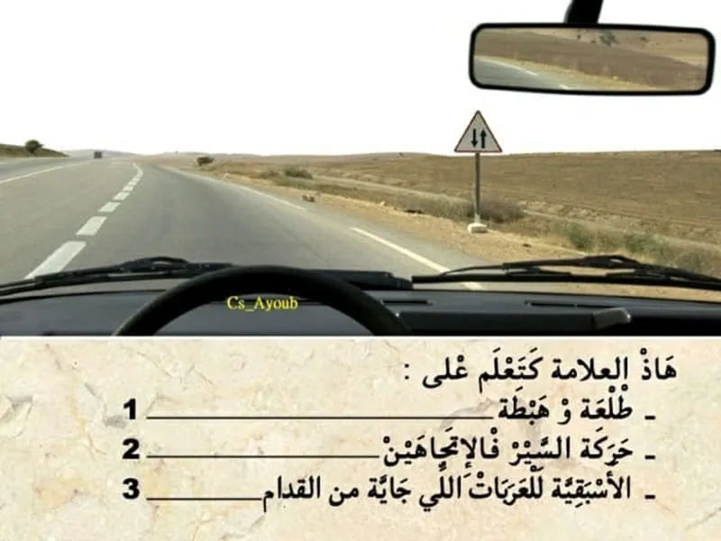
بيّن الجواب
الجواب الصحيح: 2
هذا العلامة ديال الخطر .
كتعلم على أن السير غادي يصبح في الاتجاهين.
- هذا العلامة هي الوحيدة لي موضعية . يعني الخطر ابتداء من العلامة.
السؤال 2
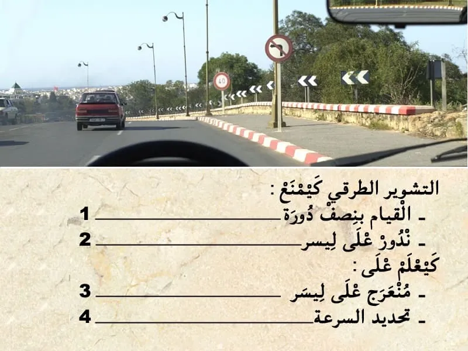
بيّن الجواب
الجواب الصحيح: 2 و 3 و 4
التشوير الطرقي كيضم:
- اسهم بالازرق ، كتعلم على منعرج خطير على ليسر .
- علامة المنع . كتمنع السير بأكثر من 40 كلم في الساعة.
- علامة منع كتمنع ندور على ليسر في ملتقى الطرق المقبل .
السؤال 3
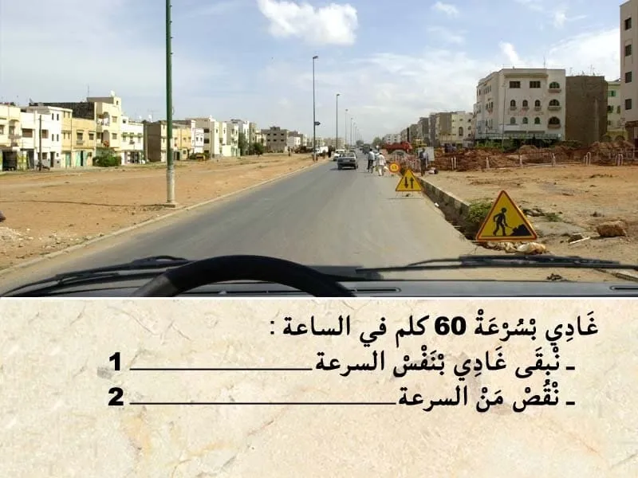
بيّن الجواب
الجواب الصحيح: 2
التشوير الطرقي كيضم علامة ديال الخطر .
- كتعلم على اشغال على الطريق.
انا غادي ب 60 كلم في الساعة. عندي خطر زائد تحديد السرعة في 40 كلم في الساعة.
و بالتالي من الواجب عليا ننقص من السرعة .
السؤال 4

بيّن الجواب
الجواب الصحيح: 2
قبل التجاوز . واجب عليا نراقب، تم نبه، تم ننحاز.
في هذا الحالة الطريق خاوية وراية ما كاينش حتى شي حد جاي وراية و اعلم بلي غادي يتجاوز .
⛔ الخط لي وسط الطريق غادي يصبح متاصل و بالتالي ما بقاش عندي الحق نتجاوز.
السؤال 5
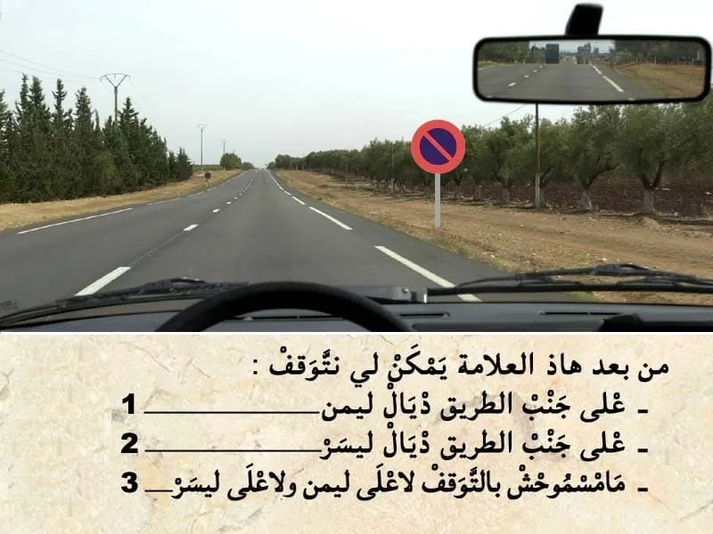
بيّن الجواب
الجواب الصحيح: 3
هذا العلامة ديال المنع كتمنع التوقف على جنب الطريق.
يعني ابتدأ من العلامة ممنوع عليا نتوقف على جنب ليمن ديال الطريق.
اما على جنب ليسر ديال الطريق ما يمكنش لي نتوقف لان السير في الإتجاهين.
السؤال 6
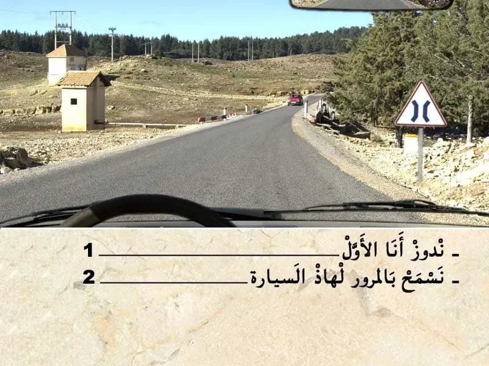
بيّن الجواب
الجواب الصحيح: 2
هذا العلامة كتعلم على طريق غادي تضياق على مسافة قصيرة "القنطرة".
في هذا الحالة واجب عليا نعطي حق الاسبقية الا شي مركبة وصلات قبل مني للقنطرة
السؤال 7
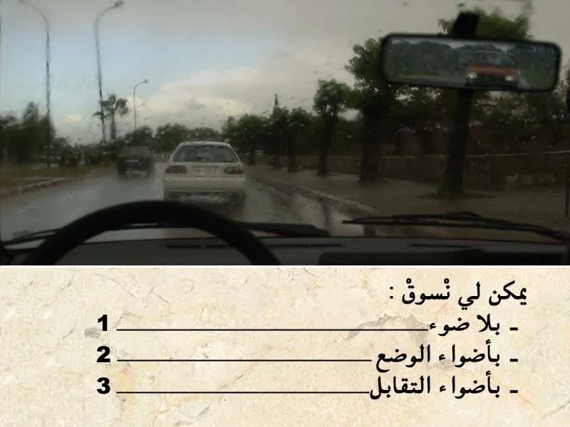
بيّن الجواب
الجواب الصحيح: 2 و 3
في هذا الحالة كاين الضبابة و التالي من الواجب عليا نشغل الاضواء باش نكون واضح للأخرين .
في حالة الضبابة يمكن ليا نمشي :
-- بأضواء الوضع.
-- أضواء التقابل .
-- أضواء الضبابة ديال القدام .
السؤال 8
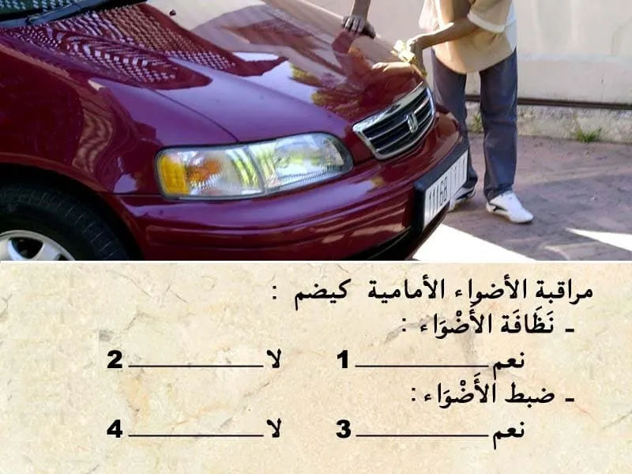
بيّن الجواب
الجواب الصحيح: 1 و 3
يجب على السائق دائما مراقبة نظافة الأضواء و الاشتغال الجيد ديالها .
للاضواء الأمامية و حتى الأضواء الخلفية.
بما فيهم الأضواء الحمرين و أضواء التوقف .
السؤال 9
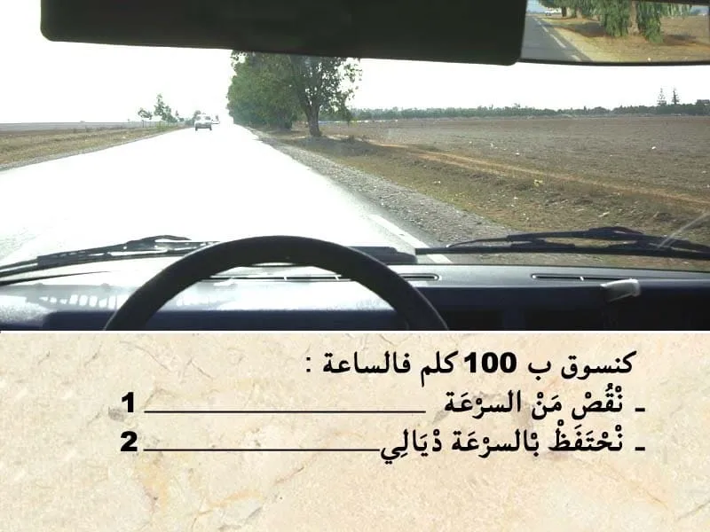
بيّن الجواب
الجواب الصحيح: 1
في حالة صعوبة الرؤية لي ممكن تكون بسباب:
- الضبابة او الشمس مقابلة مع السائق او الرياح قوية او زوبعة رملية .
هذا الشي كيشكل خطر على السياقة . و بالتالي من الواجب على السائق يتقص من السرعة.
السؤال 10
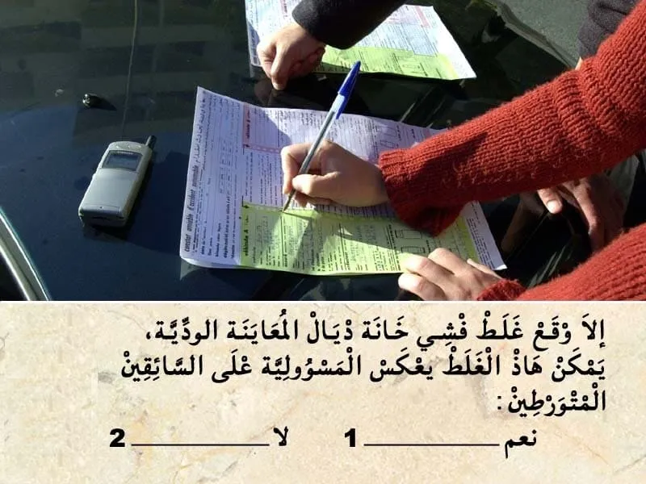
بيّن الجواب
الجواب الصحيح: 1
✍عند وقوع حادثة سير أدت إلى خسائر مادية، يجب على السائق الحفاظ على الهدوء والحرص على ملء المعاينة الودية بعناية.
لا تعتبر المعاينة الودية إطلاقا اعترافا بالمسؤولية في حال حدوث أضرار بدنية، تقوم مصالح الأمن الوطني أو الدرك الملكي بإنجاز تقرير يرفق بهذا المحضر.
✍تعبر هذه المعاينة عن الأحداث والحقائق وتستخدم من أجل التعويضات اللازمة وهي ضمان لتسوية سريعة للحوادث لذا ينصح بالاحتفاظ بنموذج فارغ منها في المركبة.
✍يجب على السائق إبلاغ مؤمنه "شركة التأمين" عن الحادثة داخل أجل لا يتجاوز 5 أيام.
✅ يتكون محضر المعاينة الودية من العناصر الأساسية التالية:
✔ تاريخ الحادثة. ✔ المكان بالتحديد. ✔ المصابون حتى بإصابات خفيفة. ✔ الأضرار المادية التي تلحق بغير المركبتين أ و ب. ✔ الأضرار المادية التي تلحق بغير المركبتين أ و ب. ✔ الشهود. ✔ المركبة أ / المركبة ب. ✔ المركبة. ✔ المؤمن عليه. ✔ السائق. ✔ توضيح لنقطة الاصطدام الأصلية. ✔ الأضرار الظاهرة. ✔ الرسم التخطيطي. ✔ الملاحظات. ✔ التوقيعات.
السؤال 11
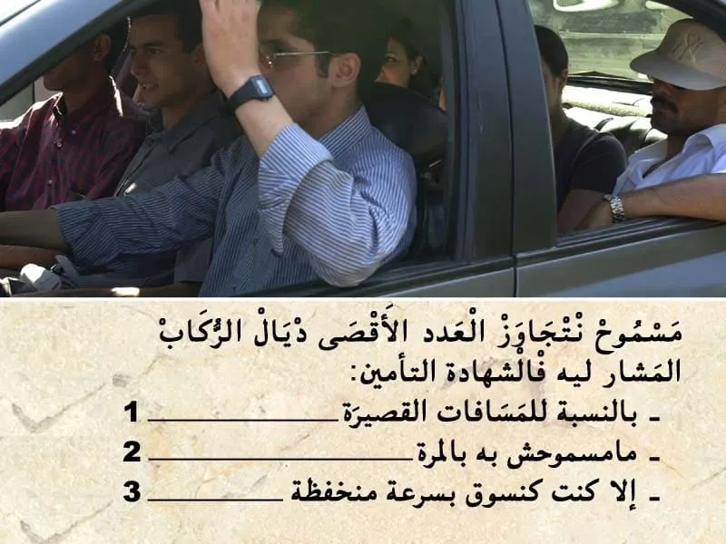
بيّن الجواب
الجواب الصحيح: 2
العدد الأقصى ديال الركاب كيكون مشار ليه في شهادة التأمين.
و من الواجب احترام العدد الأقصى.
السؤال 12
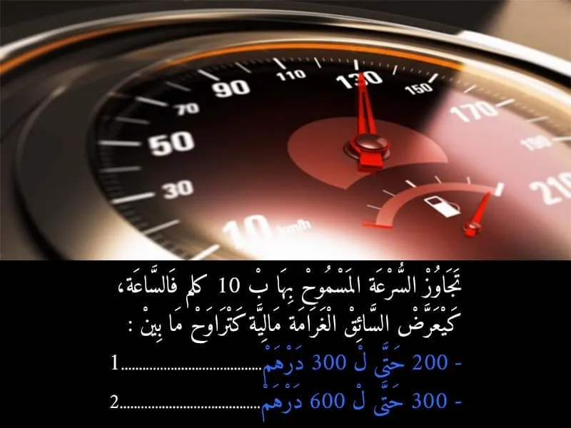
بيّن الجواب
الجواب الصحيح: 2
تجاوز السرعة ب 10 كلم في الساعة كتعتبر مخالفة من الدرجة 3 بشرط ما تفوتش 20 كلم في الساعة و كتعرض السائق لغرامة مالية من 300 حتى ل 600 درهم .
و لكن بدون سحب النقط
السؤال 13
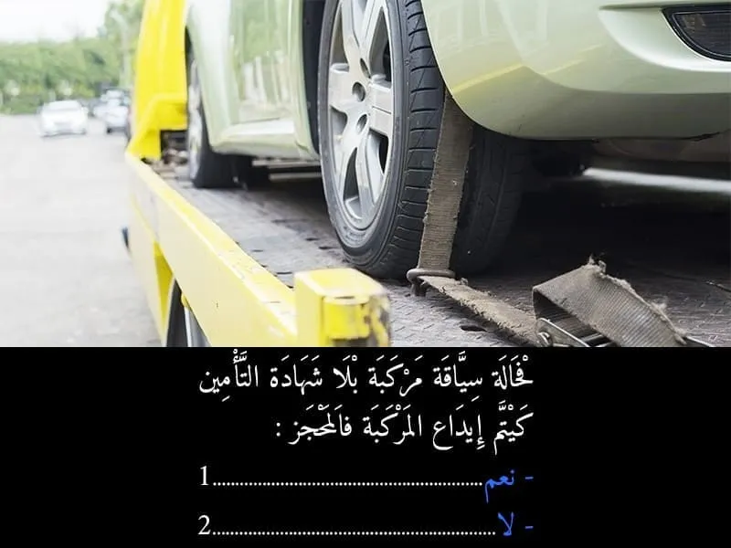
بيّن الجواب
الجواب الصحيح: 1
من الواجب التوفر على شهادة التأمين لسياقة مركبة .
في حالة عدم التوفر على شهادة التأمين يتم اداع المركبة في المحجز.
السؤال 14

بيّن الجواب
الجواب الصحيح: 2
الطريق فيها في الإتجاهين .
و الجهة ديالي عامرة فيها سيارة واقفة و بالتالي كان واجب عليا نسمح بالمرور للعربة لي جاية قبالتي .
السؤال 15
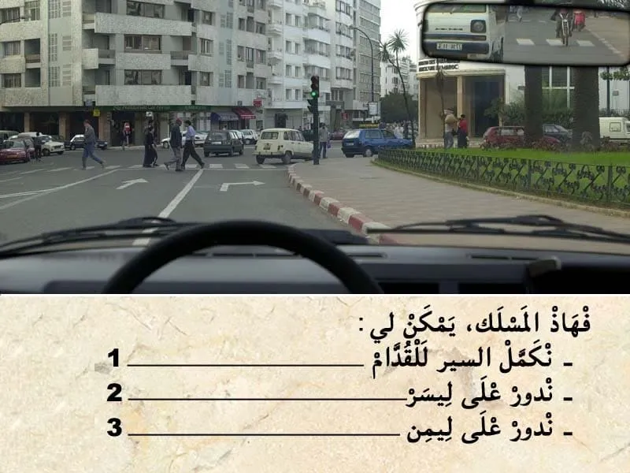
بيّن الجواب
الجواب الصحيح: 3
السهم المرسومة على الأرض سهم ديال الاجبار .
- كيعلم بلي إجباري عليا ندور على ليمن في هذا ملتقى الطرق .
و بالتالي ممنوع عليا ندور على ليسر او نكمل للقدام .
السؤال 16
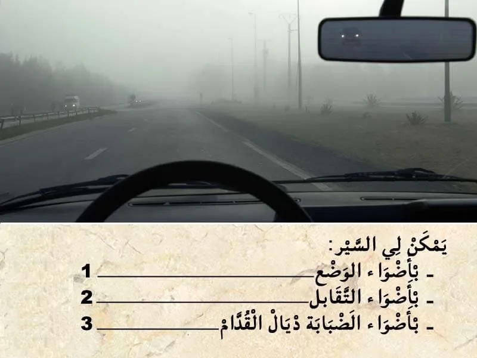
بيّن الجواب
الجواب الصحيح: 1 و 2 و 3
في هذا الحالة كاين الضبابة و التالي من الواجب عليا نشغل الاضواء باش نكون واضح للأخرين .
في حالة الضبابة يمكن ليا نمشي :
-- بأضواء الوضع.
-- أضواء التقابل .
-- أضواء الضبابة ديال القدام و ديال الخلف .
السؤال 17

بيّن الجواب
الجواب الصحيح: 1
في هذا الحالة . انا متوقف و السيارة لي خلفي حتى هي متوقفة .
ليسر ديالي خاوي ما جاية حتى مستعمل طريق في جنبي و بالتالي يمكن لي نغادر السيارة ديالي فالحين.
السؤال 18
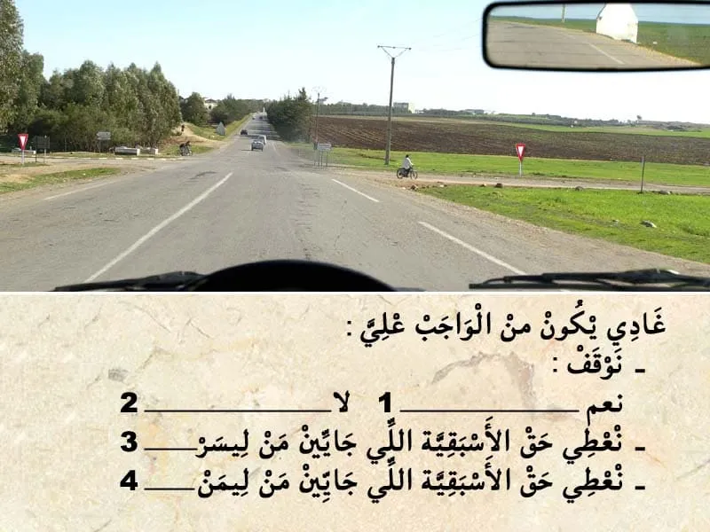
بيّن الجواب
الجواب الصحيح: 2
في هذا الحالة الطريق لي على ليمن و لي على ليسر عندهم علامة اعطاء حق الأسبقية .
و بالتالي ندوز بلا ما نعطي حق الأسبقية.
السؤال 19
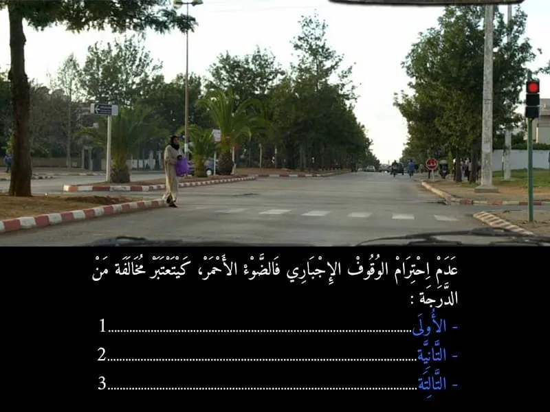
بيّن الجواب
الجواب الصحيح: 1
عدم احترام الوقوف الاجباري المفروض بالضوء الاحمر كيتعتبر مخالفة من الدرجة الاولى. و كيتم خصم 4 نقاط من رصيد رخصة السياقة . و غرامة مالية 700 درهم .
- في حالة اداء الغرامة في اجل 24 ساعة كيأدي السائق لي ارتكب المخالفة 400 درهم .
- أما في حالة الاداء في اجل 15 يوم فثمن الغرامة هو 500 درهم .
- أما في حالة عدم الادء في اجل 15 كتصبح الغرامة 700 درهم .
السؤال 20

بيّن الجواب
الجواب الصحيح: 2
مسافة التوقف كيتم حسابها بالعلاقة التالية :
- العشر ديال الصعة مضروب في نفسه . يعني في هذه الحالة :
- السرعة 100 كلم في الساعة .
و بالتالي مسافة التوقف : 10*10=100 متر.
--- يعني الجواب رقم 2.
السؤال 21
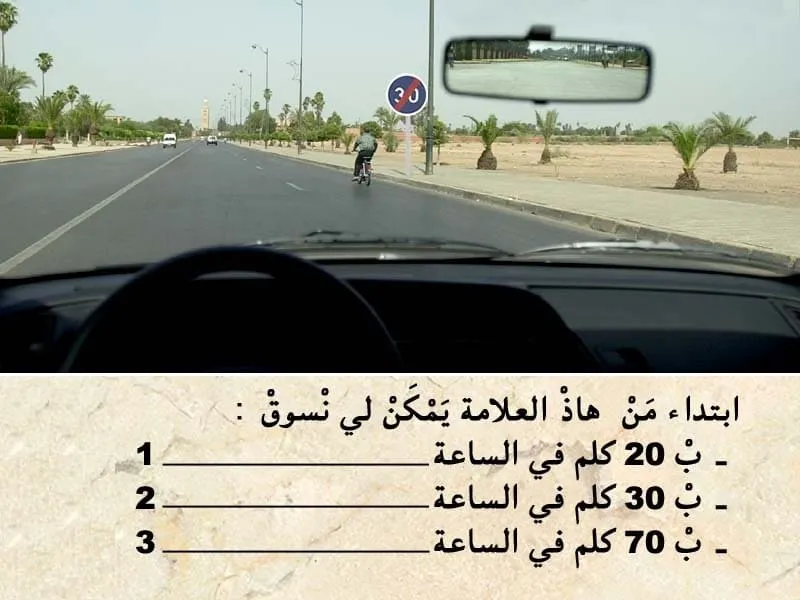
بيّن الجواب
الجواب الصحيح: 1 و 2
هذا العلامة ديال نهاية الاجبار.
- كتعلم على نهاية السرعة الدنيوية الإجبارية .
✅ ابتدأ من العلامة يمكن لي نمشي بسرعة اقل من 30 كلم في الساعة.
⛔ حيت داخل المدينة السرعة محدودة في 60 كلم في الساعة. و بالتالي ما يمكنش لي نمشي ب 70 كلم في الساعة.
السؤال 22

بيّن الجواب
الجواب الصحيح: 1 و 3
في هذا الحالة ما عندي حتى مانع كيمنع التوقف او الوقوف على جنب الطريق.
و بالتالي يمكن لي نوقف و نتوقف بين هذا زوج السيارات.
السؤال 23
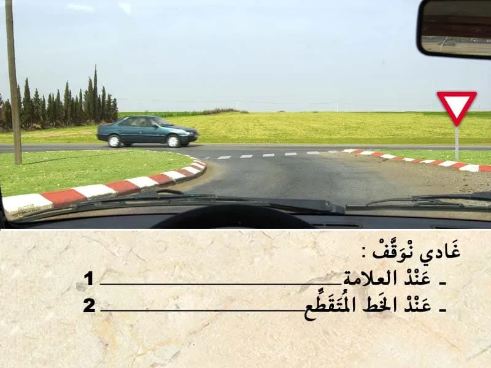
بيّن الجواب
الجواب الصحيح: 2
عند وجود هذا العلامة . كتكون مرفوقة بخط متقطع .
هذا الخط المتقطع كيعلم على المكان لي من الواجب عليا نوقف حداه باش نعطي حق الأسبقية للي جاي من ليمن و للي جاي من ليسر.
السؤال 24
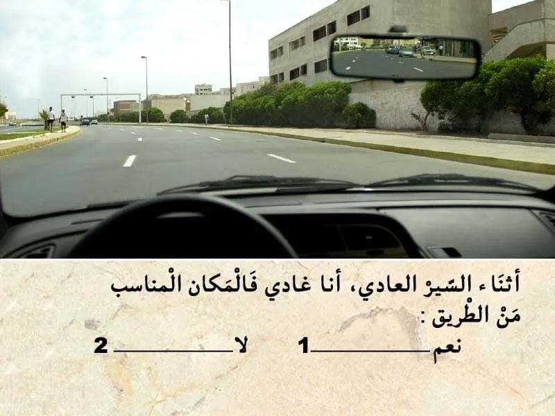
بيّن الجواب
الجواب الصحيح: 2
الطريق في الغالب كتكون مقسمة لمسالك .
في حالة الطريق لي عنده اتجاه وحيد كيكون مسلك للسير العادي و مسلك للتجاوز .
و في السير العادي من الواجب عليا نكون في المسلك لي على ليمن ديال الطريق .
اما المسلك الثاني يمكن لي نستعملوا فقط للتجاوز.
السؤال 25
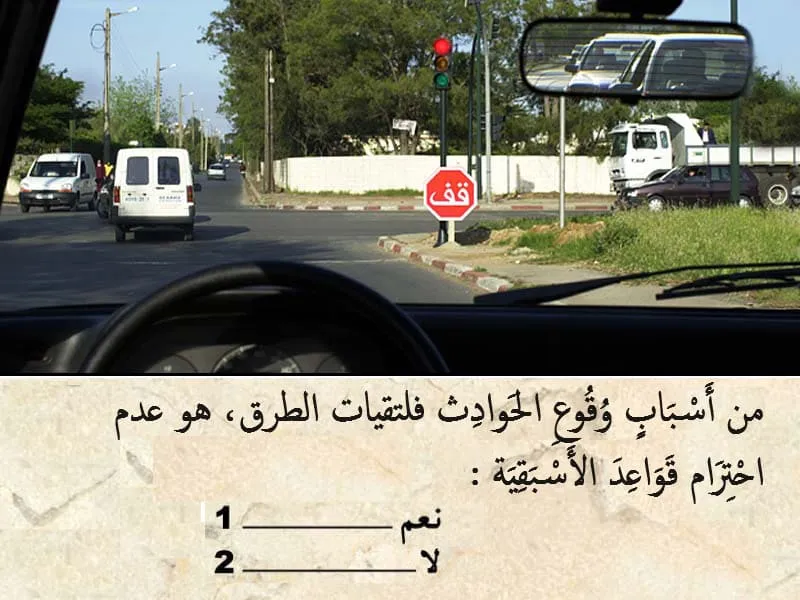
بيّن الجواب
الجواب الصحيح: 1
من بين أسباب وقوع الحوادث في ملتقيات الطرق هو عدم احترام حق الأسبقية.